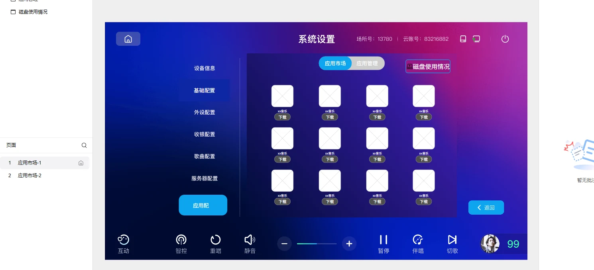
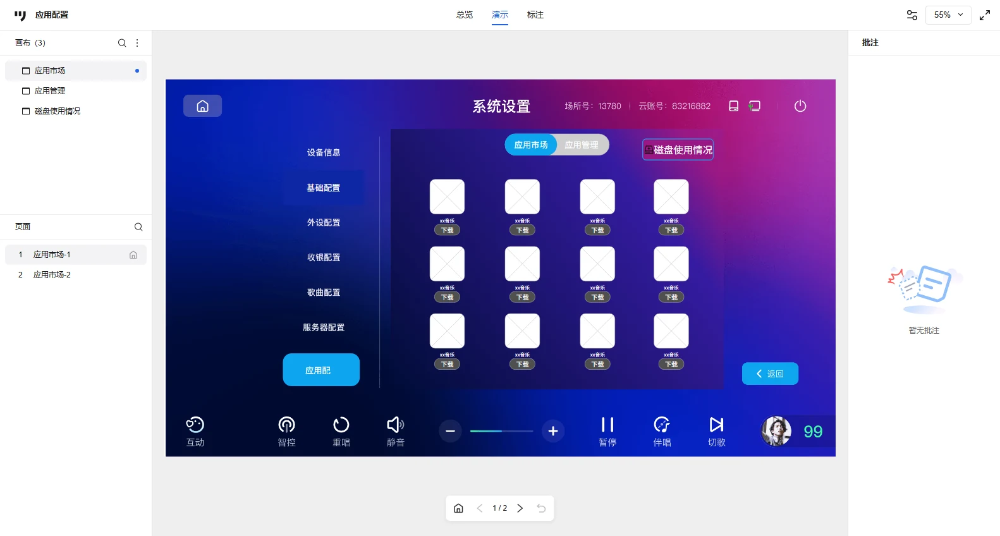

做这个功能花时间最多的地方不是画界面，而是把「下载、卸载、更新」这三条路上所有会出问题的地方想一遍： 空间不足时提示显示多久、能不能被关掉、用户连着点怎么办、卸载过程中能不能取消。 开发不会因为主流程不清楚停下来，只会因为边界没说清楚停下来。
01 需求背景与清单
1.1 需求背景
客户要求提供更多的应用服务，因此需要在 VOD 新增应用配置功能，可以下载和卸载云端应用。
客户的原话是方案，不是问题。往下追一层，他们实际遇到的困难是 VOD 的功能边界在出厂时就被固化了： 设备卖出去之后能力就锁死，想加功能只能靠整机 OTA 升级，周期长、风险高，而且只能全量推送。 所以应用配置要解决的其实是「让设备的能力可以在售卖之后按需扩展」，应用市场只是它目前的形态。
这个判断影响了后面两个设计取向。一是容量按 12 个位置一次做满，并在右下方留了「下一页」的扩展位； 二是系统自带的功能（比如缺歌反馈）不进入应用管理，从结构上就把「平台能力」和「可装卸应用」分开。
1.2 需求清单
| 序号 | 需求描述 |
|---|---|
| 1 | 【新增】系统设置下新增应用配置入口 |
| 2 | 【新增】应用配置功能 |
本期同时交付墨刀可点击原型，用于向客户与开发演示交互；原型地址随需求说明书一并提供。
02 入口调整
设置-系统设置界面调整：在左侧列表最下方（服务器配置下）新增「应用配置」入口按钮； 点击时按钮变为蓝色，并将右侧内容区切换到应用配置界面。
位置上我选了放在系统设置的左侧列表里，而不是给一个独立首页入口。 理由是这个功能做的是「设备能力管理」，属于设置域，不该跟影视、音乐这些内容消费入口抢首页曝光。 放在系统设置里既符合用户的心智模型，也避免应用市场在产品冷启动期占用首页资源。 代价是入口比较深，首批使用需要靠客服话术和说明书引导。
03 应用市场（2.2.1）
应用配置界面由上方居中的两个 tab 切换显示，分别是「应用市场」和「应用管理」，默认显示应用市场，当前显示的 tab 变为蓝色。 右下角设置返回按钮，可以返回到设置界面。
界面结构
- 一页由 3 行 × 4 列，共 12 个应用位置组成；后续应用增多时在右下方增加「下一页」按钮。
- 每个应用：logo → 应用名 → 「下载」按钮，用户点击即可直接下载安装。
- 点击应用图标进入应用详情：展示 logo、应用名称、版本信息、需要存储空间、应用详情内容，并设置下载按钮（逻辑同上）；右上角关闭按钮可关闭当前页面。
- 应用市场只显示未下载的应用，已下载的应用只在应用管理中显示，下载完成后自动从应用市场移除。
下载中的状态与暂停
下载时，原「下载」按钮的位置替换为下载进度条，显示当前下载百分比。
下载中点击进度条即暂停下载，进度条上显示「暂停中」；再点击一次继续下载。
空间不足：一条被反复打磨的异常
当设备可用存储空间不足以安装当前应用时，用户点击下载按钮后：
| 规则 | 定义 |
|---|---|
| 提示内容 | 屏幕中心弹出 Toast：「下载失败！磁盘空间不足，请卸载应用后重试」 |
| 显示时长 | 共 3 秒，到时自动淡出消失 |
| 是否阻断 | 不阻断，提示展示期间不影响用户其他操作 |
| 冷却锁 | 首次提示触发后立即启动 3 秒冷却锁 |
| 冷却期内连点 | 重复点击「下载」仅重置当前提示的剩余显示计时（重新开始 3 秒倒计时），不再触发新的下载检测 |
| 恢复条件 | 冷却锁解除 且 提示完全消失后，下载按钮才恢复正常可点击响应 |
这三条规则看起来琐碎，但都对应一个很具体的行为：用户遇到「空间不足」时的第一反应就是连着点。 如果每次点击都重新检测、重新弹提示，用户看到的是提示疯狂闪烁，体验上跟卡死没区别。 冷却锁加上「只重置倒计时」的处理，连点时的表现就是「提示一直挂着，但我没触发任何新动作」， 不容易被误解。等冷却锁解除、提示也完全消失之后，下载按钮才恢复正常。
04 应用管理（2.2.2）
同样是 3 行 × 4 列共 12 个应用位置。每个应用：logo → 应用名 → 「卸载」按钮。
卸载流程
点击卸载后弹出弹窗：「确定要卸载（应用名）吗？」
点击取消，返回刚才的页面。
弹出「正在卸载中，请稍后…」，该弹窗不能被用户手动关闭，卸载完成后自动退出。
弹出「已成功卸载（应用名）」，显示 2 秒后自动淡出，不影响用户操作。
详情页与检查更新
点击图标进入详情：展示 logo、应用名称、版本信息、占用存储空间、应用详情内容，并设置卸载按钮（逻辑同上）；右上角关闭按钮可关闭页面。
已下载的应用可在详情页检查更新：
| 分支 | 提示与后续 |
|---|---|
| 点击「检查更新」 | 弹出「检查更新中，请稍后…」 |
| 已是最新版本 | 弹出「目前已是最新版本」 |
| 存在新版本 | 弹出「检测到新版本，是否进行更新？」 |
| 点击取消 | 退出当前提示，返回应用详情页面 |
| 点击确定 | 进行更新，弹出「正在更新中，请稍后…」；完成后弹出「已成功更新（应用名）」，2 秒后消失，不影响用户操作 |
| 确定后空间不足 | 弹出「更新失败！磁盘空间不足，请卸载应用后重试」 |
平台能力的边界
- 系统自带的功能（如缺歌反馈等）不会出现在应用管理界面中，也无法被卸载。
- 已经卸载的应用可以在应用市场中重新下载。
05 磁盘使用情况（2.2.3）
- 在应用配置的右上角、两个 tab 右侧设置「磁盘使用情况」按钮。
- 点击后弹出弹窗，窗口名称「磁盘使用情况」，在上方居中显示；右上角设关闭按钮，也可点击弹窗外的区域关闭。
- 弹窗主体为一个环形图：已占用的内存为蓝色条，按使用存储的百分比顺时针占用环形区域。
- 环形图内部居中显示当前存储占总空间的百分比；百分比下方展示具体存储和总存储的数值大小。
磁盘信息我做成了按需弹出的环形图，没有常驻在应用管理页顶部。 用户只会在两个时刻真的需要看它：准备删东西的时候，或者刚被「空间不足」挡下来的时候。 常驻一个进度条，平时只是视觉噪音，真正被读到的时候又很少。
06 可交互原型
下面这份原型是我按需求说明书 V1.0 的规则逐条还原的可交互 Demo（纯前端，无需安装）。 建议按这个顺序点一遍，可以完整覆盖需求里的全部分支：
- 左侧点「应用配置」→ 进入应用市场
- 点任意应用「下载」→ 下载中点进度条 暂停 / 继续
- 点「云游戏大厅」下载 → 触发 空间不足提示，连续点击按钮观察 3 秒冷却锁
- 右上角「磁盘使用情况」→ 查看环形图
- 切到「应用管理」→ 卸载 → 取消 / 确定；再进详情页试「检查更新」
注：本 Demo 为展示需求规则而独立实现，非产品正式客户端；存储容量、下载耗时、服务器返回均为模拟值。
07 原型设计稿
用墨刀完成的高保真原型。下面这些图是从墨刀离线演示包里自动截取的画板， 演示包保留的是原型真实渲染的结果，比 PDF 导出更能反映设计意图，因为 PDF 导出会把同一张底图重复使用，看不出弹窗状态。



说明：磁盘使用情况是弹出层（弹窗），静态画板截图不体现弹窗状态，请看上方 可交互原型 中的实际环形图效果。
08 复盘
这份文档里，主流程其实画得很快，真正花时间的是那些不写就一定会被开发追问的地方： 下载暂停怎么算、冷却锁期内连点怎么处理、提示是不是非模态的。 后来我意识到，需求文档的质量差别主要就体现在这里，而不是流程图画得好不好看。
另外两件做对的事：一是用可点击的原型代替文字描述， 「连点下载按钮会怎样」这种问题，写一段话说不清，点一下原型三秒就明白了； 二是把扩展位提前留进规格，一页 12 格加上右下角的「下一页」， 以后应用变多了不用返工重做布局。
如果重做一次
- 补一张状态机图，把未安装、下载中、暂停、已安装、更新中这几个状态和它们之间的跳转画出来， 比逐条文字更不容易漏。
- 提前定义网络类失败的提示文案。这一期只覆盖了「空间不足」这一种失败， 网络中断、服务器连不上该怎么提示当时没写。
- 为「应用体积超过设备总容量」这种极端情况准备一句兜底话术， 否则用户会陷入一种永远装不上、又不知道为什么的困惑。
变更记录
| 版本 | 修订人 | 修订时间 | 修订内容 |
|---|---|---|---|
| V1.0 | 王铂为 | 2026.8.24 | 新建文档 |
下一步是把状态机图和网络类失败的文案补成 V1.1。 评审的时候我打算直接用可交互原型演示，而不是照着文档逐条念， 这样开发能当场对着具体行为提反驳，比念完再讨论有效。